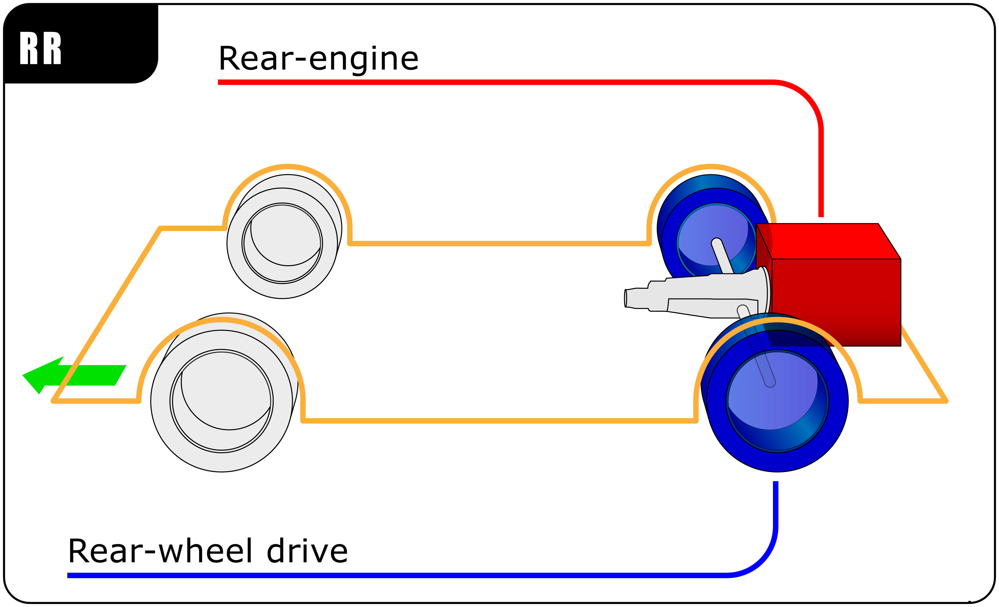
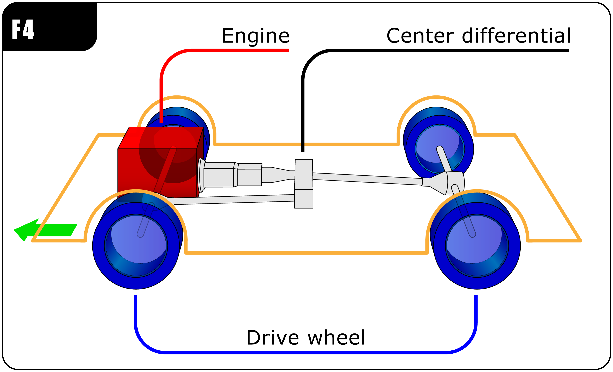
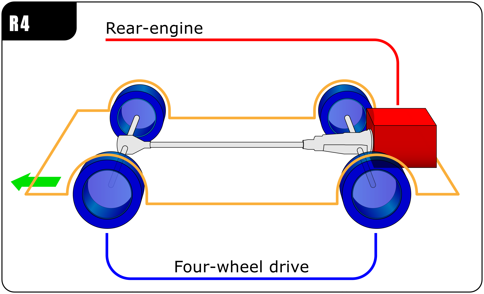
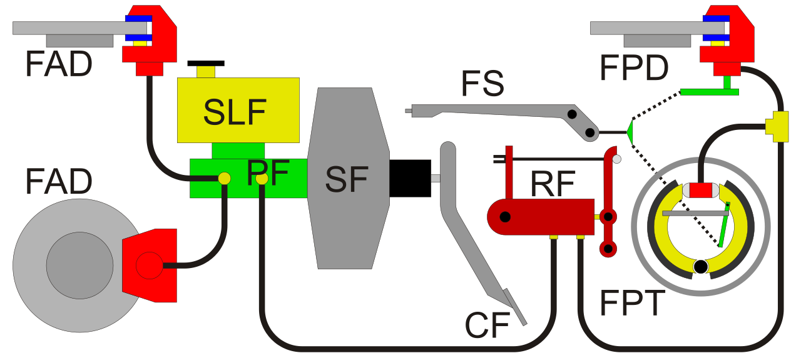

The study of how vehicles move and respond to inputs and forces. Drivetrain transfers power from the engine to the wheels for controlling the vehicle. It plays a pivotal role for determining the acceleration, deceleration, and other factors and motion of a vehicle. Braking is responsible for stopping a vehicle by converting kinetic energy into thermal energy.
Drivetrain and Braking
Automobile Layout:


Automobile layout means the layout of the engine and wheels. They can be divided into; front-wheel drive(FWD), rear-wheel drive(RWD) and four-wheel drive (4WD).
Front-wheel drive layout:
Rear-wheel drive layout:
Four-wheel drive layout 1:
Four-wheel drive layout 2:
Drum Brake:
Braking system for cars:

Braking system:
A brake is a mechanical device that inhibits motion by absorbing energy from the moving system. It is used to slow down or stop a moving vehicle. Most brakes commonly use friction between two surfaces pressed together to convert the kinetic energy of the moving object into heat/thermal energy.